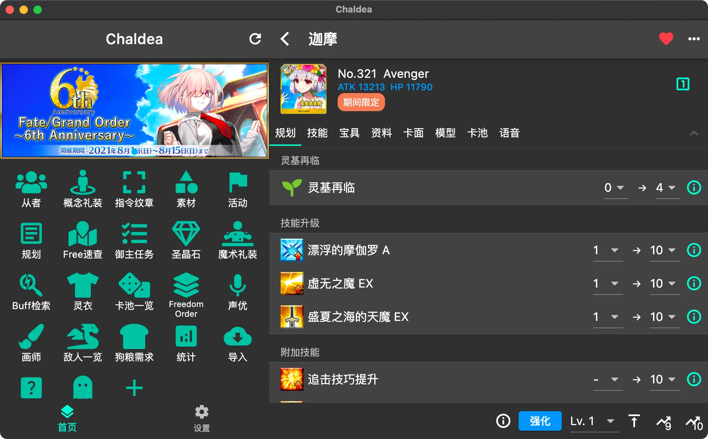
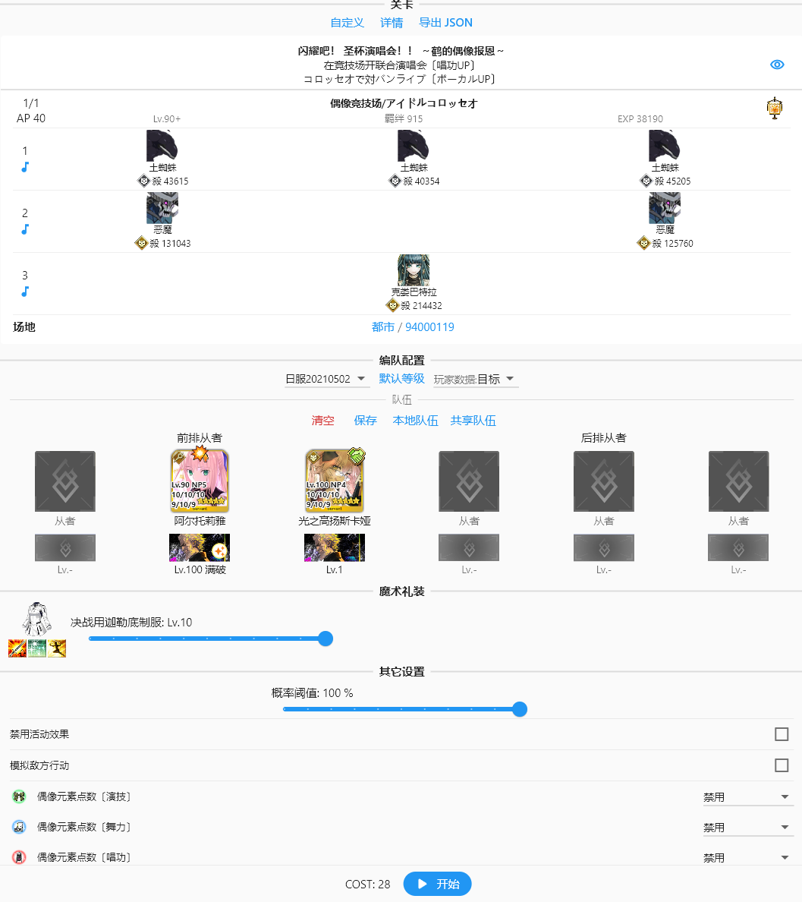

Chaldea 用了半年踩过的四个坑——别让它们耽误你肝活动
Chaldea 看着就是个数据规划工具，上手没门槛。但 HTTPS 抓包、Web 渲染器、素材缺口、卡池概率这四块我几乎每个都栽过一次跟头，把坑记下来省你走弯路。
开头——这工具看着简单，其实有几个地方容易翻车
我当初装 chaldea官网 的时候以为就是个 FGO 数据规划软件，点几下就能把自己迦的从者、素材都同步进来。结果第一天就在 HTTPS 抓包上卡了整整半小时，后来又在 Web 版渲染器上摔了一次、素材缺口算错两次、卡池概率看错一次——每一次都不是大 bug，但每一次都让我以为"这软件是不是坏了"。
这些坑不是 Chaldea 的锅，它做得其实很良心，只是 FGO 本身的区服差异、HTTPS 加密、Flutter Web 的渲染限制这些外部因素堆在一起，新手很容易踩中。把我踩过的几个整理出来，你对照着看看有没有同样的问题。

坑一：HTTPS 抓包"连不上"，反复配置代理证书白折腾
症状：按 App 里的引导装完代理证书、切回游戏进了个人空间，再切回 Chaldea，等了一分钟什么数据都没进来。Chaldea 里提示"未检测到 HTTPS 流量"。
原因：我装的是日服客户端。Chaldea 的 HTTPS 抓包国服和台服官方客户端可以直接用，但日服和美服的 FGO 客户端做了 HTTPS 流量加密（官方叫 SSL Pinning），中间人代理根本拦不住。我之前完全没注意这个区服差异，盯着"未检测到流量"提示反复检查代理配置，甚至换了三个代理 App 还是不行。后来才翻到 chaldea文档 里"日服 / 美服不支持官方客户端直接抓"这一句，原来根本不是我操作错了。
还有一种情况是国服偶尔会临时开 SSL Pinning——游戏更新后突然抓不了了，这时候不是你配置的问题，是游戏服务器端加了限制，等从 chaldea下载 拿更新版本或者临时换截图识别导入就能绕过去。
解法：先确认自己是哪个区服的。国服台服按流程走没问题；日服美服直接走"账号文件登录"那条路——游戏里导出从者 JSON 或账号绑定文件，Chaldea 里选账号文件登录，不用折腾代理证书。另外每次游戏大更新后如果突然抓不了了，先上社区看看是不是国服临时开了 Pinning，别盲目重装代理。
坑二：Web 版字体变方框、页面卡顿、截图按钮点不动
症状：在浏览器里打开 Web 版的 Chaldea，页面加载出来了但中文全是方框；或者加载特别慢，打开卡池页面要等十几秒；更离谱的是 Laplace 编队页面右上角的相机图标灰着点不动。我第一反应是浏览器不行，换了 Chrome、Edge、Firefox 试了一圈，有的好有的坏，摸不着规律。
原因：Web 版有两个渲染器——HTML 和 CanvasKit，Chaldea 默认设的是 Auto，Flutter 引擎会自己选。问题是 Auto 在移动端浏览器里大概率选 HTML，在桌面端选 CanvasKit，但这个选择不一定是你当前场景最优的。我用手机 Chrome 打开时 Auto 选了 CanvasKit，移动端性能差就卡；桌面端 Safari 有时会选 HTML，HTML 渲染器用系统字体，中文字体计算不准就变方框；Laplace 截图功能只有 CanvasKit 支持，HTML 下按钮本来就不可用。最坑的是改完渲染器设置不会热切换，要手动刷新页面才生效，我第一次改完没刷新，盯着方框页面怀疑设置没保存。
解法：到设置 → 通用设置 → Web 渲染器里手动指定。桌面端 Chrome / Edge 用 CanvasKit，效果最完整；移动端老老实实用 HTML，别强求 CanvasKit；网速慢想快加载也选 HTML；字体变方框或截图不工作直接切到 CanvasKit；页面布局错乱则反过来切 HTML。改完记得按 F5 或 Ctrl+R 刷新，不刷新白改。

坑三：素材缺口算出来不对，Free 本刷多了或刷少了
症状：素材列表页显示虚影之尘缺口 50，按这个数去 Free 本规划刷了 50 个，刷完发现其实活动还没领的奖励有 30 个，等于多刷了 30 场。或者反过来，缺口显示 20，刷完领了活动奖励发现还剩 30 没刷够。
原因：两个小陷阱叠加起来很烦人。第一，素材列表页底部那个"Event"活动奖励开关，每次重新进入素材页面都会自动勾上。你上次手动取消了不算，下次打开它又勾回来了。第二，Free 本刷完没重新跑 HTTPS 抓包的话，Chaldea 里的库存数字不会变，缺口还是旧的——你以为缺口 50，其实游戏里已经刷了 20 个，Chaldea 还不知道。这两个点单独看都不致命，但叠在一起就会让你的规划完全跑偏。
解法：刷 Free 本前，先手动确认一下 Event 开关是不是你想要的状态——想把活动奖励算进缺口就勾，不想算就取消，每次都要重新看一眼。刷完一批之后，如果中间没领活动奖励，至少刷完再重新抓一次包同步库存，不然继续按旧缺口规划只会越刷越偏。
坑四：概率 UP 卡池以为"总概率提升了"，抽完才发现自己想多了
症状：看到卡池页面写着"吉尔伽美什（Saber）概率 UP"，又显示"UP 后概率 0.8%"，心想平时五星概率才 1% 左右，这个 UP 了之后单独占了 0.8%，是不是总五星概率也跟着涨了？抱着这个念头抽了几发没出，回头翻文档才反应过来。
原因：FGO 概率 UP 的机制是"总五星概率不变，只是分配比例变了"——UP 从者多分到的那部分概率，是从其他非 UP 五星那里扣过来的。Chaldea 的卡池详情页其实把这个逻辑用数字写得明明白白，但我第一次看的时候跳过了那段"概率提升来自其他从者概率减少"的说明，直接盯着 UP 数字脑补成了总概率提升。
解法：看卡池页面时别只看 UP 数字，往下拉看看概率分配那一段——Chaldea 会告诉你平时每个五星的概率是多少、UP 后这个从者的概率涨到多少、对应的哪些其他从者的概率被挪走了。攒石规划模块和卡池详情联动，标记了想抽的卡池之后会自动算缺口和活动奖励预估，别光凭感觉就氪金。
防坑清单（记不住的时候回来翻）
- 先查区服：HTTPS 抓包失败时第一反应不是重装代理，是确认自己是国服台服还是日服美服，日服美服直接走账号文件登录
- 改完渲染器必刷新：Web 版换了 CanvasKit / HTML，F5 一下，不刷新等于没改
- 素材页每次进都确认 Event 开关：它会自动勾上，别以为上次取消过就一直保持
- 抓包不及时更新库存 = 规划白算：刷完 Free 本、领完活动奖励，记得重抓一次同步数据
- 概率 UP ≠ 总概率上涨：总五星概率基本恒定，Chaldea 写了分配比例，别脑补
知道这些坑之后，Chaldea 其实相当省心——HTTPS 抓包自动同步从者和素材、Free 本规划算效率、卡池详情给概率说明，这些功能做好了之后日常用基本没毛病。我后来把这些坑都摸清了，现在开活动前半小时就能把规划做完，再也没犯过多刷少刷的错。相关的资料在 GitHub、Gitee、GitCode 三处都同步维护，国内访问哪个都不卡。